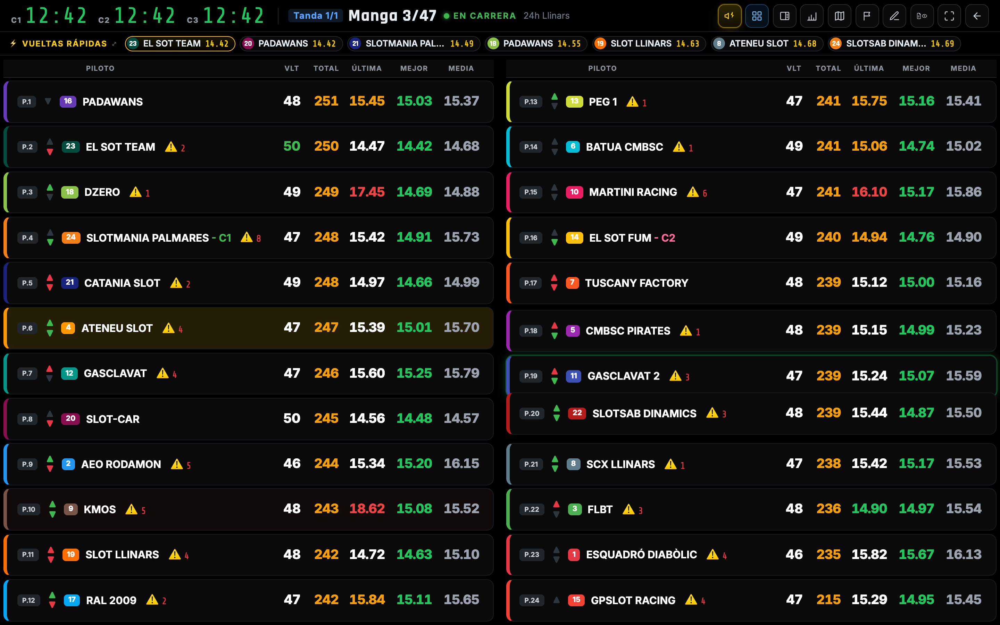
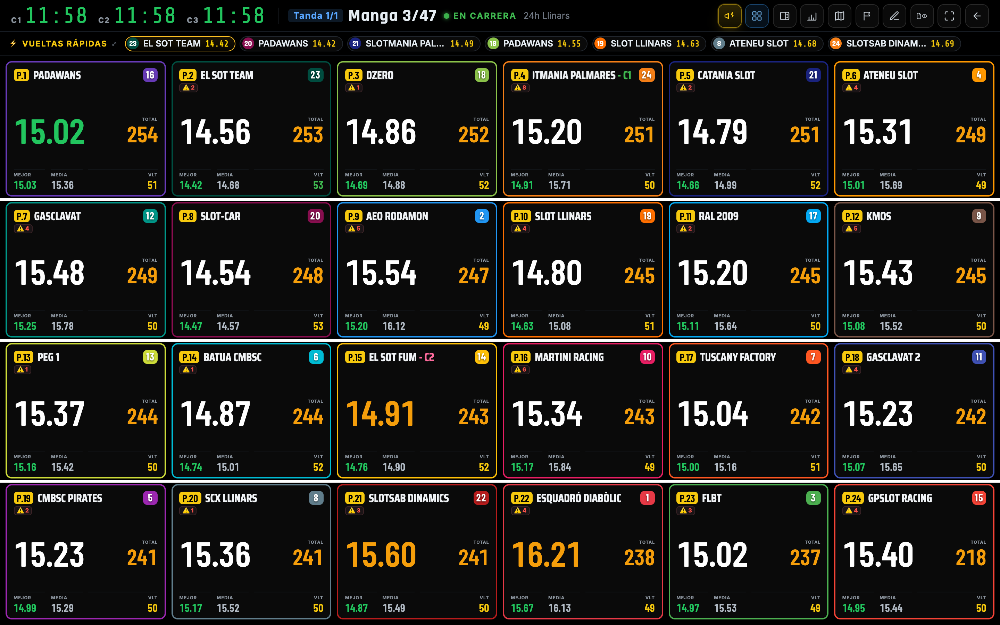
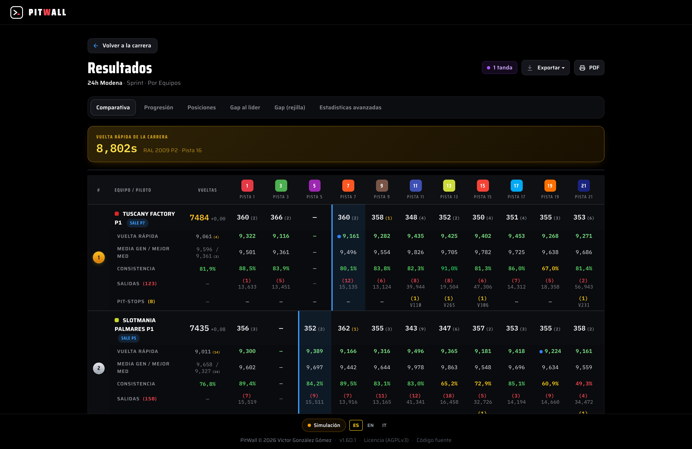
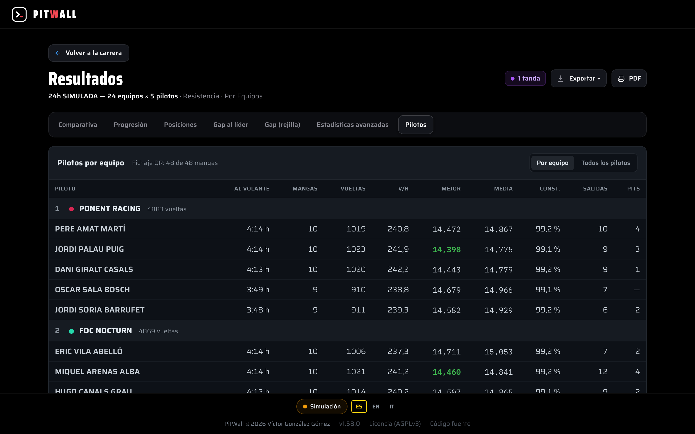
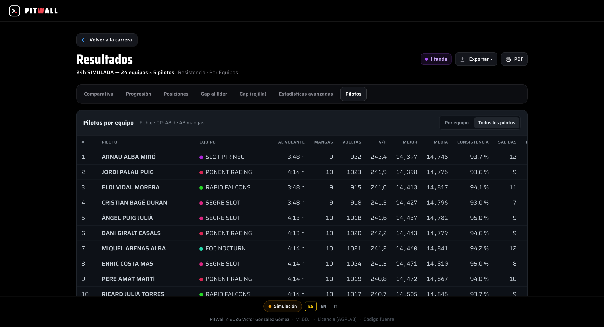

La pantalla en directe

És la pantalla de la mànega en curs. El que veus en temps real, volta a volta.
Rellotges per circuit (C1, C2, C3…). Si la cursa fa servir diversos circuits alhora, a dalt tens un rellotge per cadascun. Cada rellotge marca el temps d’aquesta mànega en aquest circuit. Quan el rellotge arriba a zero, aquesta mànega acaba i tots canvieu de carril.
Targetes de carril. Una targeta per cada cotxe en pista, pensada per llegir-se de lluny: l’ última volta va en gran amb el total al costat i, a sota, la millor volta, la mitjana, el Gap V i les voltes de la mànega. Les xifres s’ajusten soles a la mida de la targeta. El que llegeixes a cadascuna:
- TOTAL — voltes acumulades fins ara a la mànega.
- ÚLTIMA — la teva última volta completa. És la teva referència immediata: millores o caus?
- MEDIA — el teu ritme mitjà a la mànega (mitjana simple de les teves voltes, sense comptar el pas de sortida; la teva primera volta completa sí que compta). És el que de debò mana per guanyar en resistència: no la millor volta solta, sinó el ritme sostingut.
- MEJOR — la teva millor volta vàlida de la mànega.
Colors i avisos de la targeta.
- Lila amb «RÉCORD CARRERA» — aquesta última volta és la volta ràpida de tota la cursa.
- Blau amb «BOXES» — aquesta volta va incloure una parada a boxes; no és que vagis lent.
- Pilot al volant amb una barra del temps que porta conduït a la cursa davant del màxim per pilot: ambre a partir del 85 %, vermella si el passa. «SIN PILOTO» = aquest carril no ha fitxat i la mànega està en marxa.
- Avisos: sortides, parades a boxes («PIT 2») i jocs de pneumàtics usats sobre el total («4/12»). Una parada o un canvi de pneumàtics acabats de fer es ressalten uns segons.
- Descans: qui no corre aquesta mànega mostra la seva posició, equip, voltes i «DESCANSO x/y».
Bàner de volta ràpida. Quan algú marca la volta més ràpida del moment, salta un avís destacat. Si és teva, molt bé. Si és d’un rival, és el llistó que has de batre.
Les dues vistes del directe (botó «Vista»)
Amb el botó Vista tries com es mostren els carrils. Hi ha dos modes:
Filas horizontales — una fila per carril, molt còmoda de llegir. Si els equips no caben en una columna, la vista es reparteix en dues columnes, cadascuna amb la seva capçalera, per veure’ls tots alhora (fins a 40 en una pantalla de 1080p). En curses amb control de pilots, el pilot va sota l’equip.

Tarjetas con detalles — una targeta per carril amb tot el que s’ha descrit a dalt: última volta en gran, total, millor, mitjana, Gap V, pilot i avisos. Amb la classificació estimada al costat oberta, les targetes treuen millor, mitjana i Gap V (ja són a la classificació) i mantenen les voltes de la mànega sota el total.

L’antiga Cuadrícula compacta ja no existeix: si la tenies triada (o obres un enllaç amb ?view=2), s’obren les targetes. L’ordre de targetes i files —per classificació estimada o per voltes reals— es tria a Ajustes → Preferencias → Orden del directo; amb voltes reals no es mostra el Gap V.
Live-stats: les 3 pestanyes
Live-stats és la vista d’estadístiques. Té tres pestanyes i cadascuna respon a una pregunta diferent.
Mànega actual

La classificació d’ aquesta mànega, amb el detall de cada pilot: V (voltes), MEJOR, MEDIA, Δ (delta, el teu marge), SALIDAS i PERDIDO (temps perdut en sortides). Mira-ho per saber com vas ARA, amb qui comparteixes carril i qui mana a la teva mànega.
Classificació projectada

La posició estimada al final de la cursa, quan tots hàgiu completat totes les vostres mànegues. És la que de debò importa per saber si vas guanyant. Mira-ho per saber la teva posició REAL a la general, no només a la mànega que estàs corrent.
Comparativa per carril

Què rendeix cada carril. Uns carrils són més ràpids que d’altres. Aquí veus les diferències entre C1, C2, C3… Mira-ho per saber si el teu carril actual t’ajuda o et penalitza, i quins carrils et queden per rodar.
Mànega actual = la foto d’ara. Projectada = com acabes. Carril = per què el teu ritme canvia de mànega a mànega.
El teu panell (Mi panel)

Tria el teu pilot i tindràs el teu propi panell amb targetes. Una per una:
POSICIÓ. Compte amb aquesta: és la teva posició PROJECTADA de cursa, no la de la mànega. Et diu on acabaràs si el ritme es manté. Si a la teva mànega vas 4t però el teu panell diu P1, vol dir que sumant totes les mànegues vas primer. Fia’t d’aquesta.
VOLTES MÀNEGA. Quantes voltes portes a la mànega actual.
MILLOR. La teva millor volta vàlida. «Vàlida» vol dir que no compta:
- el pas de sortida (de la graella a la línia, arrencant aturat: és mig traçat, no una volta),
- ni un pas parcial (una volta que en realitat és mitja volta mal comptada),
- ni temps per sota del mínim de la cursa (passos fantasma impossibles).
Compte amb això: la teva primera volta completa sí que compta —és ritme real i pot ser perfectament la teva millor volta—. L’únic que es descarta és aquest primer pas des d’aturat. Així que la teva MILLOR és una volta real de debò, mai un número regalat ni una volta bona que es perd.
MITJANA. El teu ritme mitjà. Mitjana simple de les teves voltes de cursa (inclou sortides i pit-stops; només exclou el pas de sortida). És exactament el mateix criteri que fa servir TicTac, al mil·lisegon. És el número que la projecció fa servir per estimar on acabes. Baixa la teva mitjana i puges a la general.
Δ (mitjana-millor). És la teva mitjana neta menys la teva millor volta. És a dir: quant marge et queda. Un Δ petit = rodes gairebé sempre al màxim, molt poc per rascar. Un Δ gran = tens ritme però el perds en moltes voltes: aquí hi ha el teu or, en ser més constant. La «mitjana neta» aquí no compta sortides ni pits, només el teu rodar normal.
SORTIDES / PIT-STOPS. Quantes vegades has sortit i quantes parades has fet. Cada sortida et costa temps i posicions. PitWall compta les sortides amb la mateixa regla que les «voltes lentes» de TicTac: és sortida tota volta que trigui més que la teva volta ràpida en aquest carril durant la mànega + 1,5 s (també la primera volta). Si a més triga el doble o més de la teva mitjana neta, és una parada a boxes (🔧). Les voltes de bandera (cronometrades o reposades) i les que reposa PitWall després d’una caiguda de connexió no compten mai com a sortida.
En directe, la marca és provisional. La teva volta ràpida va baixant durant la mànega i, amb ella, el límit. Exemple: al minut 1 la teva millor és 10,20 s → límit 11,70 s, així que una volta d’11,50 s no és sortida. Al minut 6 fas 9,80 s → el límit baixa a 11,30 s i aquella volta d’11,50 s passa a comptar com a sortida. Per això el comptador de sortides pot pujar mentre rodes bé. En tancar la mànega es repassa tot amb la volta ràpida definitiva. Aquesta regla no canvia la coma ni el desempat, i les curses corregudes abans de la v1.38.0 conserven les sortides tal com es van comptar.
Temps perdut en sortides. El que t’han costat aquestes sortides, en segons. Posa-ho en context: de vegades una sola sortida val més posicions que dècimes de ritme durant tota la mànega. Aquí ho veus clar.
PitWall Lap: la teva cursa al mòbil

PitWall Lap és la web que obres al mòbil des del teu box per seguir la teva cursa en directe, sense instal·lar res. És només per a curses de resistència (per equips). És de només lectura: consultes el teu timing, no controles la cursa.
Com entres. L’organització et dona l’adreça (alguna cosa com http://<IP-del-servidor>:3000/lap/<carrera>) i un PIN de 4 xifres del teu equip. Obres l’adreça, tries el teu equip a la llista, poses el PIN i prems Entrar. Amb Cambiar equipo pots sortir i entrar amb un altre.

El teu panell. A dalt, la teva posició en gran: és la projectada (on acabaràs sumant totes les mànegues), la mateixa que veus al directe i a la general — no la de la mànega solta. A sota, la teva distància al líder («a N vueltas», «a la par» o «🏁 Líder de la carrera»). La línia d’estat et diu en directe en quina mànega i carril vas i quant queda (o «En descanso» / «Esperando próxima manga» / «Carrera finalizada»). I les targetes:
- Última vuelta — la teva última volta (parpelleja en actualitzar-se).
- Mejor vuelta — la teva millor volta vàlida.
- Vueltas — total acumulat de tota la cursa.
- Media carrera — el teu ritme mitjà acumulat (el que fa servir la projecció).
- Pit stops — parades fetes.
- Gap al líder — a quantes voltes del primer.
Si hi ha projecció activa, apareix Estimación al final amb la teva posició estimada i les teves voltes projectades.
Seguiment de rivals. Més avall, la secció «Seguimiento · mangas terminadas» compara el teu ritme amb el dels equips que vulguis vigilar. Hi ha una targeta per al teu equip (ressaltada, amb l’etiqueta Tú) i una altra per cada rival que segueixis, fins a 5. Cada targeta és una taula per carril amb una fila Total:
- Vueltas — totes les voltes vàlides en aquest carril (inclosa la primera de cada mànega).
- Rápida — la millor volta en aquest carril, sense comptar la primera volta ni les sortides.
- Media — el ritme mitjà comptant les voltes de sortida (sense la primera volta).
- Limpia — el ritme mitjà sense sortides ni primera volta: el teu ritme «pur» en aquest carril.
Només compten les mànegues acabades: la mànega en curs no hi entra fins que es tanca, i llavors la taula s’actualitza sola. Per triar rivals obre «Elegir equipos a seguir (hasta 5)», marca les caselles i prem Guardar. La llista és de l’equip, no del mòbil: tots els mòbils del teu box veuen els mateixos rivals i, si algú la canvia, els altres s’actualitzen sols.
La veu (canta-voltes). Amb el botó 🔊 Voz actives el locutor (arrenca apagat: cal tocar la pantalla una vegada perquè el mòbil deixi sonar l’àudio). Et canta el temps de cada volta, i avisa de canvi de posició, mitja mànega, últim minut, últims 30 s i fi de mànega. A ⚙️ Ajustes de voz actives/desactives cada avís i, al bloc avançat, que canti cada X minuts la teva mitjana de carril, els gaps amb rivals o la mitjana per pujar una posició.
Pantalla sempre activa. Mentre el panell estigui obert, la pantalla no s’apaga; als 30 segons sense tocar-la s’enfosqueix (per no gastar bateria ni molestar), però la veu continua cantant. Toca la pantalla per il·luminar-la una altra vegada.
Pole en directe

Si la cursa té pole (la volta classificatòria que decideix l’ordre de sortida), la pots seguir en directe encara que no l’organitzis tu.
- Des de la pàgina d’inici de convidat, mentre hi ha una pole en marxa apareix una targeta que porta directament al seu tauler.
- També s’hi arriba des de Estadísticas en vivo.
És una vista de només lectura: no hi ha botons d’iniciar, aturar ni passar al pilot següent, només el que està passant: qui és a la pista ara mateix, l’ ordre de sortida que queda per rodar i la classificació provisional (del més ràpid al més lent) a mesura que es van registrant els temps. S’actualitza sola, sense recarregar. A més canta els temps en veu alta, en l’idioma de la pàgina: «Nueva pole» si algú la bat, «Mejor vuelta» si el pilot en pista millora la seva i, si no, només el temps. Si no ho vols sentir, apaga Cantar tiempos a la barra de dalt: només afecta el teu dispositiu.
Consistència

La targeta més important per millorar. La consistència mesura la teva regularitat volta a volta: si fas sempre el mateix temps o si fas salts.
Què és el %. És el percentatge de les teves voltes netes que cauen dins del ±1,5% del teu temps típic d’aquesta mànega. Si en una mànega el teu temps típic (la mediana) és 10,00 s, la banda va de 9,85 s a 10,15 s: cada volta dins d’aquí compta com a neta de ritme. Un 85% vol dir que 17 de cada 20 voltes van ser al teu ritme; el 100% és rodar totes les voltes enganxades a ell. Es compta mànega a mànega —canviar de cotxe o de carril entre mànegues no compta com a inconsistència, cada mànega es mesura contra el seu propi ritme— i el número final és el total de voltes de la cursa: on més vas rodar, més pesa. És robusta per construcció: una volta boja no entra a la banda i no t’espatlla la mediana.
El ±DE en segons (més útil que el %). Al costat del % veuràs alguna cosa com ±0,13 s. Són els segons que oscil·les, amunt o avall, respecte al teu ritme d’aquesta mànega, mesurats de manera que una volta dolenta aïllada no l’infla (amb una volta de trànsit, el ±DE de sempre es dispara; aquest no). Fixa-t’hi tant com en el %: un ±0,13 s et diu de manera directa com d’ajustat rodes i discrimina millor entre dos pilots amb un % semblant. Objectiu: reduir el teu ±DE.
Nivells de color. El sistema et classifica segons el % de voltes dins de la teva banda:
- Excelente — 90% o més. Rodar de rellotge.
- Buena — 75% o més. Sòlid.
- Irregular — 60% o més. Fas salts, hi ha temps per guanyar sent més fi.
- Errática — per sota del 60%. Molta inestabilitat; centra’t a acabar voltes netes abans que a atacar.
Quines voltes compten. Només voltes netes, i des de la segona volta endavant: fora el pas de sortida, les sortides de pista, els pit-stops, les voltes fantasma i les reposades automàticament. Una mànega amb menys de 3 voltes vàlides no compta per al número.
Dos matisos que convé saber. Les voltes molt lentes no entren a la banda, així que et baixen el % encara que no desviïn la teva mediana — just el que busques: reflecteixen quantes vegades de debò vas anar al teu ritme. I en pistes molt curtes els % tendeixen a sortir una mica més baixos que en les llargues: compara’t sobretot dins de la teva mateixa cursa i pista.
Les gràfiques
Cada gràfica té tres modes. Canvien segons el que vulguis veure.
Temps per volta. El clàssic: cada punt és una volta i el seu temps. Llegeixes la forma de la teva cursa. Baixes en escalfar? Caus al final pel cotxe o per tu? Un pic aïllat (una sortida) o una tendència? Serveix per veure on guanyes i on perds al llarg del stint.
Sobre la mitjana

Aquí cada volta es dibuixa com a diferència respecte a la teva mitjana: per sobre = volta més lenta, per sota = més ràpida. És la millor vista de la consistència: com més plana i enganxada al zero estigui la teva línia, més regular ets. Els pics cap amunt són les teves voltes dolentes. Objectiu visual: aplanar la línia.
Gap de voltes

La teva distància al líder al llarg del temps (eix X = minuts de la mànega; eix Y = gap amb el líder que triïs). Puja = perds terreny; baixa = retalles. Serveix per veure EN QUIN MOMENT de la mànega vas guanyar o perdre la cursa, i si el forat és estable o se t’escapa.
Projecció i gaps
Posició projectada vs posició de mànega. Són coses diferents i totes dues importen:
- De mànega — on vas a la mànega que corres ara. Útil per al teu duel directe a la pista.
- Projectada — on acabaràs la cursa sumant totes les mànegues. És la teva posició REAL a la general. La projecció estima les teves voltes totals dividint el temps total de cursa entre la teva mitjana. Baixar la teva mitjana = millor projecció.
Important: la posició projectada és la mateixa a tot arreu (targeta del directe, Classificació General i panell Lap). Si en un lloc veus P2, a tot arreu veus P2. No hi ha dues veritats.
L’estimada provisional (l’asterisc *). Si al costat d’una estimada veus un asterisc taronja, vol dir que aquesta xifra encara no està assentada: l’equip és a la seva primera mànega i encara no n’ha passat del 60 % d’ella, així que PitWall encara no té una referència sòlida del seu ritme des de la sortida. Aquest número es pot moure. Tan bon punt la mànega creua aquest punt, l’asterisc desapareix i la referència queda fixada. Ho veuràs a la classificació Le Mans i a les estadístiques en directe; passant el ratolí per sobre en surt l’explicació.
La distància porta la coma (i també es diu en segons). El forat amb el líder no s’arrodoneix a voltes senceres: inclou la coma, la fracció de volta que portes feta. Per això l’etiqueta ja no diu «+3 vlts.» sinó alguna cosa com «a 2,8 v (35,5")»:
- 2,8 v és la distància real en voltes, amb el seu decimal.
- 35,5" és el que et costaria recuperar-la al teu propi ritme (aquestes 2,8 voltes × la teva mitjana). És el mateix número que canta TicTac.
D’on surt la coma: amb la mànega en marxa és la coma viva —el que portes rodat des del teu últim pas per meta—, així que la distància es mou amb tu dins de la volta; amb la mànega acabada o si descanses, és la coma amb què vas creuar la bandera. Abans d’això, en caure la bandera es perdia qui anava més avançat a la pista i dos cotxes separats per 2,8 voltes i per 3,0 es veien idèntics.
Tipus de gap.
- Gap al líder — a quant ets del primer.
- Gap per voltes — la distància expressada en voltes, amb la seva coma («vaig a 2,8 voltes», no «a 3»).
- Gap en segons — aquesta mateixa distància traduïda a temps amb la teva mitjana. És el que cal retallar.
- Gap per minut — com evoluciona la distància amb el temps, per veure si retalles o et despenges.
Quan dos pilots tenen les mateixes voltes, el primer que decideix és qui va creuar abans la meta: si tots dos van acabar a la mateixa mànega i hi ha l’instant del pas, va davant el que va passar abans per la línia. L’excepció: si algun té la coma corregida a mà (vegeu Coma), mana aquesta coma, perquè l’instant del pas és justament la dada que enganya si un cotxe es va quedar aturat. Si no (mànegues diferents o curses antigues sense aquesta dada), desempata la coma: la fracció de volta que portaves feta just en caure la bandera. Rodar ajustat fins al final et pot donar aquesta fracció de més que et puja una posició. I si també empateu en coma, decideix el temps total acumulat.
La vista de Resultats (després de la cursa)
Quan la cursa acaba, Resultados és on s’analitza tot amb calma. Té diverses pestanyes; cadascuna respon a una pregunta diferent. A dalt sempre veus la volta ràpida de la cursa (qui i en quin carril).
Resultats (la graella per carril)

És la taula principal. Una fila per participant i, per a cada carril per on va passar, cinc dades apilades:
- Rápida — la teva millor volta en aquest carril. El punt blau + MEJOR marca la volta ràpida d’aquest carril entre tots.
- Media — el teu ritme mitjà en aquest carril.
- Consistència — la teva consistència en aquest carril, en %: quantes de les teves voltes netes van caure dins del ±1,5% del teu ritme.
- Salidas — quantes vegades vas sortir allà (i, a sota, el temps perdut).
- Pit-stops — parades en aquest carril (amb el núm. de volta, p. ex. V355).
Serveix per veure en quins carrils rendeixes millor o pitjor, no només el teu número global. El rectangle blau marca el teu carril de sortida.
Curses de passades / repetir carril. Si el mateix carril es corre diverses vegades, cada carril es desdobla per ocurrència (1/2, 2/2…), per comparar la teva 1a passada amb la 2a pel mateix lloc.

Progressió (volta a volta)

Cada volta de la cursa, en ordre. Pots triar amb qui comparar, filtrar per mànega o per carril, i mostrar/amagar sortides (punts vermells) i pit-stops (taronges). Amb el botó Δ Delta vs media cada volta es dibuixa com a diferència respecte a la teva mitjana (millor vista per jutjar la teva regularitat: com més plana, millor). Respon: vaig baixar en escalfar? vaig caure al final? va ser un pic aïllat o una tendència?
Posicions

Una línia per participant; l’eix vertical és la posició (P1 a dalt). Si la teva línia puja, perds posicions; si baixa, en guanyes. Serveix per veure en quin moment de la cursa es va decidir el teu resultat.
Gap al líder

La teva distància al líder al llarg del temps (pots acotar el rang de mànegues). La línia que baixa = t’hi acostes; que puja = t’allunyes. Respon: en quina mànega em vaig despenjar o vaig recuperar?
Gap (graella)

La mateixa idea però en taula: files = equips, columnes = mànegues, i cada cel·la les voltes de desavantatge al tancament d’aquesta mànega (0 = líder). La vora daurada avisa que hi va haver pit-stop en aquesta mànega. A sota de cada «M{n}» es veu l’ hora real a què va arrencar aquesta mànega (en la teva hora local; passa el ratolí per veure data i hora completes); si una mànega creua la mitjanit, la seva capçalera es ressalta en daurat per veure-ho d’un cop d’ull. Pots triar 2–4 equips per veure el gap entre ells (no només contra el líder).
Estadístiques avançades

L’anàlisi profunda d’un participant: total de voltes (i netes), millor, mitjana (amb commutador amb/sense sortides), Δ mitjana-millor, sortides · pit-stops i temps perdut. A sota, l’ evolució per carril (la teva mitjana pista a pista, per veure on vas ser més ràpid) i una targeta per carril. Amb Comparar con tries un rival i es genera una taula cara a cara amb les diferències acolorides (verd = millor, vermell = pitjor).
Pilots (resistències per equips)

A les resistències per equips amb fitxatge QR (o quan les voltes ja porten el pilot) apareix la pestanya Pilotos: la cursa repartida pilot a pilot dins de cada equip. Per a cada pilot:
- Al volante — el temps que va conduir (h:mm).
- Mangas — en quantes mànegues va conduir.
- Vueltas — les voltes que va fer ell.
- V/h — voltes per hora al volant: el ritme que permet comparar pilots que van conduir temps diferents.
- Mejor — la seva millor volta (sense sortides ni pas de sortida).
- Media — la seva mitjana (sense el pas de sortida, igual que la de l’equip).
- Consistència — la seva consistència neta (la mateixa de la pestanya Resultats).
- Salidas i Pits — quantes vegades va sortir i quantes parades va fer.
Amb el selector de dalt a la dreta tries la vista:
- Por equipo — els equips en l’ordre de la classificació (posició, color, nom i voltes totals) i, a sota de cadascun, els seus pilots, del que més temps va conduir al que menys. La millor volta de cada equip surt en verd.
- Todos los pilotos — una sola taula amb #, Piloto, Equipo i les mateixes columnes. Prem el nom de qualsevol columna per ordenar: els temps van de menor a major al primer clic i la resta de major a menor; un altre clic inverteix l’ordre.

Com es reparteixen les voltes. Cada volta va al pilot que havia fitxat en aquest equip i aquesta mànega quan va creuar la meta (a l’hora real del pas), així que un relleu a mitja mànega reparteix bé les voltes: cadascú s’emporta les seves. Les voltes dels pilots sumen exactament les de l’equip, i amb les mateixes regles: la millor, sense sortides ni pas de sortida; la mitjana, sense el pas de sortida.
Si el fitxatge no va cobrir tota la cursa, la capçalera ho diu (p. ex. «Fichaje QR: 6 de 24 mangas»). Les voltes que no es poden assignar a ningú —les de mànegues sense fitxatge i les d’abans que algú fitxés tard— surten en una fila «Sin fichar» de l’equip, en gris i cursiva. Amb el seu temps passa el mateix: abans de fitxar no compta al volant, així que el temps i les voltes de cada pilot sempre van a la par. Sense fitxatge QR però amb el pilot desat a cada volta, la capçalera avisa: «Piloto tomado de cada vuelta (sin fichajes QR)».
La pestanya surt també als resultats públics i a Exportar para GitHub, i l’ Excel de resultats porta un full Pilotos amb les mateixes dades.
Classificació Le Mans (equips)

En curses per equips hi ha a més la classificació Le Mans: la general en gran, amb voltes projectades, total, gap amb el líder, mitjana, millor i P/Subir (el ritme que necessitaries per caçar el de davant). Ideal per a curses llargues.
El gap d’aquesta taula es llegeix «a 2,8 v (35,5")»: la distància en voltes amb la seva coma i, entre parèntesis, el que costaria recuperar-la al teu ritme. I si una estimada porta asterisc taronja, aquesta xifra encara és provisional (primera mànega sense passar del 60 %).
Glossari
- Consistència — la teva regularitat volta a volta: el % de les teves voltes netes que cauen dins del ±1,5% del teu temps típic d’aquesta mànega. Es compta mànega a mànega i s’agrega per voltes. Més alt = més constant.
- ±DE (desviació típica) robusta — els segons que oscil·les, amunt o avall, respecte al teu ritme típic de la mànega, calculats de manera que una volta dolenta aïllada no l’infli. Mira aquest número tant com el %.
- Media — mitjana simple dels teus temps de volta, sense el pas de sortida (la teva primera volta completa sí hi entra). Inclou sortides i pits. És la que fa servir la projecció i coincideix al mil·lisegon amb la de TicTac.
- Mitjana neta — la teva mitjana comptant només voltes normals (sense sortides, segons la regla de Sortida d’aquest glossari). Es fa servir per al Δ i per detectar incidents, no per projectar.
- Pas de sortida (warmup / pas parcial) — el primer pas per meta de la mànega: de la graella a la línia, arrencant aturat. És mig traçat, no una volta, així que no compta per a mitjana, millor ni consistència. Només aquest: la primera volta completa que ve després sí que compta per a tot.
- Volta de bandera — l’última volta que creues en caure la bandera de la teva mànega. PitWall espera uns segons aquest pas (Ajustes → Preferencias → «Espera de cruces tras el final»; 0 el desactiva) per desar-la amb el seu temps real; si el pas per meta no arriba, la reposa amb la teva mitjana. D’aquesta volta surten la teva coma i l’instant del pas que desempata quan dos acabeu amb les mateixes voltes (la coma es pot corregir a mà; vegeu Coma).
- Sub-mínim — un temps per sota del mínim de volta de la cursa. Pas fantasma impossible; es descarta sempre.
- Sortida (exit) — una volta que triga més que la teva volta ràpida en aquest carril durant la mànega + 1,5 s (la mateixa regla que les «voltes lentes» de TicTac). Compta per a la mitjana (és temps real perdut) però no per a la teva millor volta. En directe és provisional: si millores la teva ràpida, voltes anteriors poden passar a ser sortida.
- Pit-stop — parada a boxes. Compta com a temps, no com a millor volta.
- Coma — la fracció de volta que portes feta: en marxa, el que has rodat des del teu últim pas per meta; al final, la que portaves en caure la bandera. Compta en la distància al líder i desempata quan dos teniu les mateixes voltes, llevat que tots dos acabeu a la mateixa mànega: aquí va davant qui va creuar abans (vegeu Volta de bandera). Si l’automatisme enganya (un cotxe que surt o es queda aturat i continua «avançant» a l’estimació), l’operador la pot corregir a mà a la pantalla de Correccions d’una mànega tancada, activant abans Ajustes → Preferencias → «Corrección manual de la coma» (per defecte, automàtica; amb això apagat, les correccions desades s’ignoren). Una coma corregida mana en el desempat per davant de «qui va creuar abans la meta».
- Projecció — estimació del teu resultat final sumant totes les mànegues: temps total de cursa dividit entre la teva mitjana, més la coma que ja portes feta.
- Estimada provisional (*) — asterisc taronja al costat d’una estimada: l’equip és a la seva primera mànega i encara no ha passat del 60 %, així que la seva referència no està fixada i el número es pot moure.
- Gap — la teva distància a un altre cotxe (o al líder), en voltes amb coma, en segons (aquestes voltes × la teva mitjana) o per minut. Es llegeix «a 2,8 v (35,5")».
- PitWall Lap — la web mòbil del teu equip (accés per PIN): la teva posició projectada, les teves targetes de ritme i la veu que canta les voltes. Només en curses per equips.
- Pole en directe — tauler de només lectura per seguir la volta classificatòria de la pole: qui és a la pista, ordre de sortida i classificació provisional. Accessible des de la pàgina d’inici de convidat (amb una pole en marxa) o des de Estadísticas en vivo.
- Ocurrència — cada vegada que corres el mateix carril en curses de passades/repetir carril (
1/2,2/2…); permet comparar una passada amb una altra. - P/Subir — a la classificació Le Mans, el ritme (mitjana per volta) que necessitaries per atrapar l’equip de davant.
- Carril de sortida — el carril des del qual vas arrencar; a la graella de resultats es marca amb un requadre blau.
- V/h — a la pestanya Pilots, voltes per hora al volant: les voltes del pilot entre el seu temps al volant. Serveix per comparar pilots que van conduir temps diferents.
- Sin fichar — a la pestanya Pilots, la fila de cada equip amb les voltes que no es poden assignar a cap pilot: mànegues sense fitxatge QR o voltes anteriors al primer fitxatge.
Mira la teva posició projectada per saber on acabes, baixa la teva mitjana per pujar, i aplana la teva consistència (redueix el ±DE) per deixar de regalar temps volta a volta.